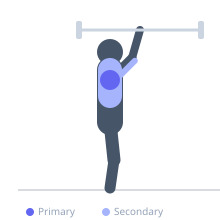

Exercise guide / Z-Press
Z-Press
The Z-Press is a seated overhead press performed on the floor with the legs extended straight in front of the body, eliminating any leg drive or lower body support. The extended-leg position demands exceptional hip flexor flexibility, core stability, and an upright torso to press overhead, making it one of the most demanding shoulder press variations. It directly reveals and addresses postural weaknesses in the overhead pressing pattern.
Primary muscles
deltoid anterior
deltoid lateral
Secondary muscles
triceps long head
trapezius upper
pectoralis major clavicular
Stabilizers
transverse abdominis
internal oblique
Equipment
Standard Barbell
Optional
Dumbbell (Fixed)


Starting position
- Sit on the floor with legs extended straight ahead. Hold a barbell at shoulder height in a front-rack or press-width grip. The torso must be completely vertical with no lean.
Setup
- Begin with a significantly reduced load. Tight hamstrings or hip flexors will cause the torso to lean back, defeating the purpose of the exercise.
Steps
- Step 1: Sit tall with legs extended, barbell at shoulder height.
- Step 2: Brace the core hard to maintain an upright torso.
- Step 3: Press the bar straight overhead, keeping the elbows slightly forward.
- Step 4: Lock out the arms completely overhead.
- Step 5: Return the bar to the shoulder position under control. Repeat.
Coaching cues
- Sit up straight — imagine a wall behind you
- No lean back during the press
- Legs stay flat on the floor
Breathing
- Exhale as you press, inhale on the descent.
Range of motion
- Full lockout overhead. Barbell returns to shoulder level on the descent.
Tempo
- 2-1-2-0
Common mistakes
- Leaning backward during the press — the torso must remain vertical throughout
- Failing to lock out at the top
- Insufficient hip flexor mobility causing the legs to come off the floor
Safety
- If unable to sit with an upright torso and legs extended, work on hamstring and hip flexor flexibility before loading this movement
- Use a spotter or spotter arms if training heavy
Training
- strength: 3–6 reps
- hypertrophy: 6–10 reps
- strength: 3–4 sets
- Rest: {'strength': 180, 'hypertrophy': 90}